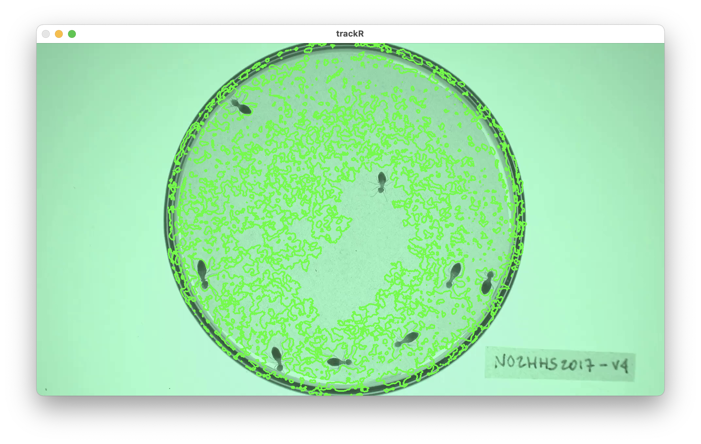

0 - Introduction
Once you are ready to track a video, you can launch
trackR by typing the following command in the R
console:
1 - Video module
Once trackR has started, it will open two windows: a
display window that will later be used to display the video (note: this
window may be hiding behind other windows) and the window shown here
that will display all the app controls.
At the bottom of the control window, you will find 3 buttons that
will always be present:
- “Save settings” and “Load settings” will allow you to save and load
settings that you have set during the current tracking session or a
previous one.
- “Reset trackR” will allow you to reset all of
trackR’s
settings to their original values.
The first thing that you will need to do is click the “Select video
file” button. This will bring up a navigator that you will use to locate
the video file that you would like to track. Once you have located the
video file in the navigator, click the “Select” button.
trackR will open the video and display its first image in
the display window (see below).

Once trackR has opened the video, new controls will
appear in the control panel of the “Video Module” (see figure opposite).
These new controls are:
-
Video range allows you to exclude parts of the video
(at the beginning and at the end) from the tracking process. This can be
useful to ignore, for instance, the beginning of an experiment during
which the animals are habituating to the environment.
-
Display size allows you to change the size of the
display window, for instance if the video is too wide for the screen. It
does not affect the video quality.
-
Video quality allows you to reduce the quality of the
video (i.e. decrease its resolution) in order to speed up the tracking
process but with a possible reduction of the tracking precision,
especially if the objects to track are small. Note that the x/y
coordinates that will be returned by trackR will match the
original resolution of the video.
-
Frame allows you to navigate through the video. Frame 1
will correspond to the lower bound of Video range, and the
last frame will correspond to the upper bound of
Video range.
Once you have set the parameters in the “Video module” to your
liking, you can move to the “Background module” by clicking on the tab
marked “2” on the right side of the control panel.
2 - Background module

When in the “Background module”, you can either choose to load an
existing background image (e.g. an image of the empty experimental setup
before the start of the experiment) or you can ask trackR
to automatically reconstruct that background from the video.
If you choose to select an existing background image, just click on
the “Select existing background” button and use the navigator to locate
and select the desired image. You can then skip the rest of this section
and go directly to the next section.
If you choose to let trackR reconstruct the background
from the video, you will first need to decide on two things:
- The “Background type” which correspond to the algorithm that
trackR will use to reconstruct the background. Four
algorithms are available:
- “Mean” computes a background image in which each pixel is the
average of the corresponding pixels in the selected video frames. This
is a fast algorithm. However it does not always produce good
results.
- “Median” computes a background image in which each pixel is the
median of the corresponding pixels in the selected video frames. This
usually produces a better result than “Mean”, but will take
significantly longer to complete.
- “Minimum” computes a background image in which each pixel is the
minimum of the corresponding pixels in the selected video frames. This
usually produces a good result when the objects to track are lighter
than the background.
- “Maximum” computes a background image in which each pixel is the
maximum of the corresponding pixels in the selected video frames. This
usually produces a good result when the objects to track are darker than
the background.
- The “Number of frames for estimating background”. Better results are
usually obtained with larger number of frames but the background will be
slower to reconstruct.
In some occasions, like in the image on the left below,
trackR will not reconstruct the background completely. This
can happen, for instance, when an object did not move at all during the
entirety of the video like it is the case here.

You can fix some of these “ghosts” by clicking the “Select ghost for
removal” button. This will allow you to draw a polygon around the object
to remove from the background by using the left button of your
mouse/trackpad. Once you have surrounded the object with a polygon, use
the right button of your mouse/trackpad to close the polygon.
trackR will then use the pixels surrounding the polygon
that you traced to replace the object with its best guess about the
color of the background below it.
Once you are happy with background generated by trackR,
you can click the “Save background file” button to save the background
image for later (re)use.
3 - Mask module

The “Mask module” is optional. It should be used if you would like to
restrict tracking to specific areas of the image, for instance to
exclude the outside of an experimental arena where things may be moving
that should not be tracked (e.g. the hands of the experimenter). By
default, trackR will use the entirety of the visible frame
to perform the tracking.
The control panel of the “Mask module) allows you to either use an
existing mask or to design your own. To use an existing mask, click
the”Select existing mask” button and use the navigator to locate and
select the desired mask image. A mask image should be a black and white
image of the same resolution of the video. White portions of the image
will be included in the traffic while black portion will be
excluded.
If you would like to design your own mask (or modify an existing mask
that you have loaded in trackR), you can use the following
controls:
- “Include all” tells
trackR to use the entirety of the
visible frame to perform the tracking. This is a useful button to reset
the mask to its default setting.
- “Exclude all” tells
trackR to use none of the visible
frame to perform the tracking. This is a useful button to wipe out the
mask before adding authorized areas for tracking using the “Add polygon
ROI” and “Add ellipse ROI” buttons.
- “Add polygon ROI” allows you to draw a polygon on the mask by using
the left button of your mouse/trackpad. Once you are sastified with your
polygon, use the right button of your mouse/trackpad to close it. If the
“Including” radio button is selected, then the area inside the polygon
will be included in the tracking. Otherwise, it will be excluded.
- “Add ellipse ROI” allows you to draw an ellipse on the mask by
indicating 5 points along the periphery of the area of interest. Use the
left button of your mouse/trackpad for this. Once you have finished
adding the 5 points,
trackR will compute the ellipse best
fitting them. It is recommended to select 5 points that are roughly
equidistant along the periphery of the area of interest. If the
“Including” radio button is selected, then the area inside the ellipse
will be included in the tracking. Otherwise, it will be excluded.
You can combine including/excluding polygons and ellipses to define a
mask as complex and detailed as you would like. Included areas will take
a slightly greener tint in the display window while excluded areas will
take a slightly more red tint (see images below).
Once you are satisfied with your design, you can save it for later
(re)use by clicking the “Save mask file” button.

4 - Segmentation module
Segmentation is the process of isolating objects of interests from
the background of an image. In order to do so, trackR first
needs to know whether it is looking for objects that are darker or
lighter than the background. You can do so by ticking the appropriate
radio button at the top of the control panel in the “Segmentation
module”.
Once this is done, trackR will need to know how
different from the background a pixel must be to be considered a part of
one of the objects to track. In order to indicate that information to
trackR, you can use the 3 RGB threshold sliders in the
control panel. They will allow you to set the threshold differences in
each of the 3 color channels of the image (Red, Green, Blue) above which
a pixel is considered a part of an object and not a part of the
background.
The objective is to find a set of thresholds that create a good
separation between the objects to track and the background. You can see
the result of changing the thresholds in the display window: all the
parts of the image that are considered an object given the thresholds
will be surrounded by a green line (see images below). A good set of
thresholds will results in green lines tightly following the edges of
the objects to track, like in the second image below. If the green lines
surround parts of the background (like in the first image below) then
the selected thresholds are not stringent enough and can be increased
for better results. On the contrary, if the green lines are missing some
or all parts of the objects to track, then the selected thresholds are
too stringent and can be decreased for better results.
You can also let trackR search for good thresholds by
clicking the “Automatically select thresholds” button in the control
panel. trackR will use a genetic algorithm to look for
thresholds that provide good segmentation results in general. You can
then tweak manually these suggested thresholds if you want.
Finally, you can use the “Frame” slider at the bottom of the control
panel to look at the result of the segmentation process in different
parts of the video. This is recommended to make sure that the selected
thresholds give good results throughout the video.

5 - Separation module
By default, trackR can track objects reliably as long as
they do not come in close contact with each other. When that happens,
however, trackR will use a number of heuristics to try and
separate them. These heuristics are based on various parameters of the
objects, namely:
- Their maximum length, in pixels
- Their maximum width, in pixels
- Their maximum surface area, in pixels
- Their density, that is the ratio between their surface area and the
surface area of the ellipse that is enclosing the object (objects with a
high density resemble better perfect ellipsoids).
You can set these parameters manually using the corresponding input
boxes in the control panel of the “Separation module”. You can also let
trackR search for good values for these parameters by
clicking the “Automatically select object parameters” button in the
control panel. trackR will look for parameters that provide
good separation results in general. You can then tweak manually these
suggested parameters if you want.
Finally, you can use the “Frame” slider at the bottom of the control
panel to look at the result of the separation process in different parts
of the video. This is recommended to make sure that the selected
parameters give good results throughout the video.

6 - Tracking module

You made it to the tracking module! You are just a few clicks away
from starting to track your video.
The first thing that you can do in this module is set the scaling
factor between the coordinates of the objects in the video (in pixels)
and their coordinates in the “real world”. This step is optional but can
be very useful if you are interested in, later, computing trajectory
statistics in real-world units or in comparing trajectory statistics
between different replicates of your experiment.
In order to do this, click the “Set scale” button in the control
panel of the “Tracking module”. trackR will ask you to
select 2 reference points in the image shown in the display panel (see
image on the left below). Once this is done, trackR will
ask you to specify the distance between these 2 reference points in
real-world units.
You can also specify a different origin for the real-world
coordinates. By default, the origin is set at the bottom-left corner of
the image. If you would like to change that, click the “Set origin”
button. trackR will ask you to select a point in the image
shown in the display panel. Once this is done, this point will become
the new origin (i.e. the new [0,0]) of the real-word coordinates.
Finally, there are a few more controls that you can set before
launching the tracking:
-
Look back controls how many past frames the tracking
algorithm should take into account to associate each detected object to
a track. This is a useful parameter to take into account if, for
instance, the objects tend to disappear for a few frames from time to
time.
-
Maximum distance (pixels) controls the maximum distance
in pixels that an object can move between two frames to be still
considered as belonging to the same track.
-
Display tracks during tracking (slower) controls
whether the video with the overlaid tracking results is played as the
tracking is happening. If it is, this will slow down the tracking
process, but this can be used to check that the tracking is working well
when looking for the right set of parameters.
Once all is set, you can finally click on the
Start tracking button, set a file in the navigator that
pops up to store the tracking data, and just let trackR
works its magic. The data will be saved as a CSV file and the next section will detail the content of this
file.
7 - Output data
Once trackR is done tracking the video, the resulting
CSV file will contain between 8 and 12 columns depending on whether you
have set a real-world scale and origin in the “Tracking module”. These
columns will be the following:
-
frame is the video frame number at which the
measurements along the corresponding row have been made.
-
track is the identity of the tracked object as
estimated by trackR.
-
x is the x coordinate of the object location in pixels
in the context of the video frame. The origin is set at the bottom-left
corner of the frame.
-
y is the y coordinate of the object location in pixels
in the context of the video frame. The origin is set at the bottom-left
corner of the frame.
-
width is the width in pixels of the object.
-
height is the height in pixels of the object.
-
angle is the angle in degrees between the main axis of
the object and the y axis.
-
n is the number of pixels covered by the object in the
image. If you set the Video quality slider in the “Video
module” to a value lower than 1, then this number if an
approximation.
Plus, if you have set a real-world scale and origin in the “Tracking
module”: + x_[unit] is the x coordinate of the object
location in real-world [unit] The origin is set to the real-worl
equivalent to that you have defined in the “Tracking module”. +
y_[unit] is the y coordinate of the object location in
real-world [unit] The origin is set to the real-worl equivalent to that
you have defined in the “Tracking module”. + width_[unit]
is the width in real-world [unit] of the object. +
height_[unit] is the height in real-world [unit] of the
object.
You can now proceed to the rest of the tutorials.
The video used throughout this tutorial was provided by Sridhar,
V. H., Roche, D. G., and Gingins, S. (2019). Tracktor: Image-based
automated tracking of animal movement and behaviour. Methods Ecol. Evol.
10, 691. doi:10.1111/2041-210X.13166 and used here with
permission of the authors.